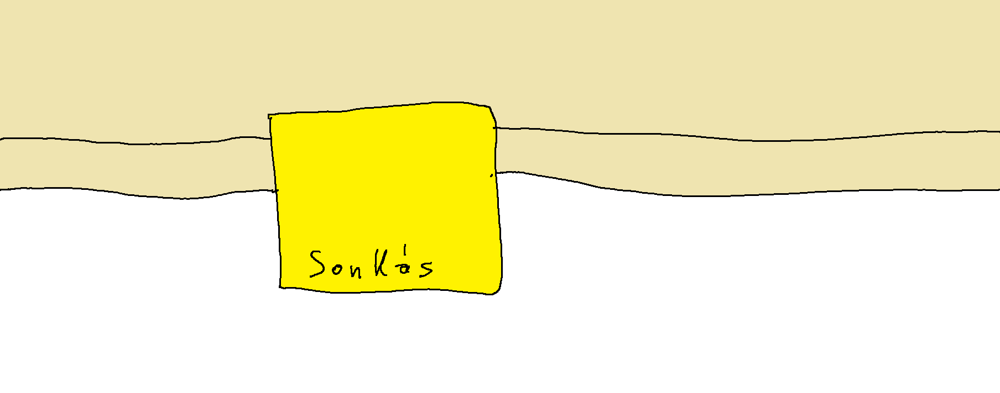

Volt Szinusznak fenttartott hely a 314-es teremben
Kiderült, hogy Szinusznak tartottak fenn helyet a 314-es teremben, nyilatkozta Koszinusz. Amikor bementem, mondta, észrevettem, hogy a mellettem lévő helyen volt egy cetli "Sonkás" felirattal. Még nem tudtam mit jelent, de amikor Szinusz elfolgalta azt a helyet egyből megértettem, a cetli azt jelezte, hogy a pad azon része Szinusznak van fenntartva. Koszinusz azt is megjegyezte, hogy lehetséges, hogy Szinusznak külön VIP helyet tartottak fenn.